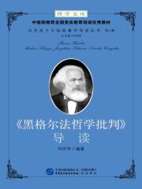
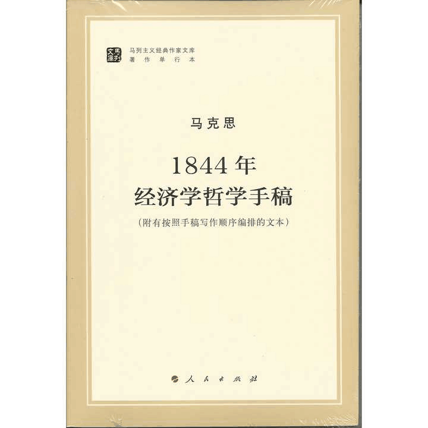
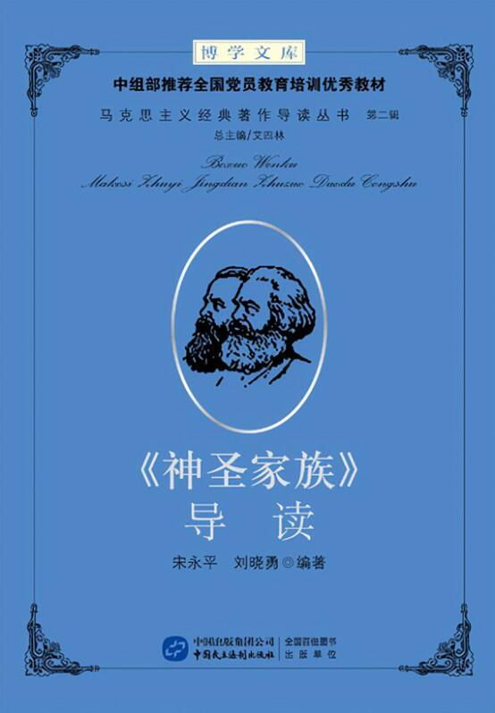
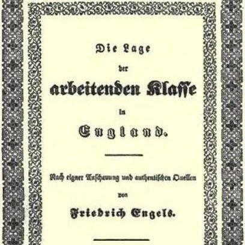
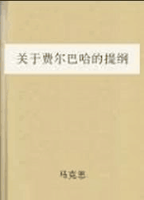

图书推荐 |
|
1.《黑格尔法哲学批判导言》 马克思 写于1843年
从唯物主义立场出发，论述对宗教的批判与对现实世界的批判的关系，
对黑格尔哲学的批判同对德国现实社会的批判的关系，
把批判的矛头指向现实的德国社会，并论述了德国革命的任务和可能性问题。
|
 |
|
2.《1844年经济学哲学手稿》 马克思写于1844年
是哲学与经济学的第一次结晶，
开创了哲学指导下的经济学研究道路以及以经济学为基础的哲学发展道路，
马克思的共产主义理论正是以这种结合为基础的。
同时，该书也是马克思一生政治经济学批判研究的起始点。
|
 |
|
3.《神圣家族》 马恩 合著于1844年-1846年
是马克思和恩格斯在制定无产阶级世界观的理论基础即辩证唯物主义历史唯物主义过程中的一个重要里程碑，
是马克思恩格斯合作的第一部论战性质作品。
列宁指出：”它奠定了革命唯物主义的社会主义的基础。”
|
 |
|
4.《英国工人阶级状况》 恩格斯写于1844年-1845年
运用历史唯物主义基本观点，
对资本主义经济、政治制度和阶级关系作了全面剖析，
分析了资本主义生产方式必然导致的不良后果，
从而揭示了资本主义本质及其必然灭亡的客观规律。
还论述了现代无产阶级随着产业革命而发展的历史过程，
以实地调查的大量事实，
详尽地描述了英国无产阶级的悲惨生活，
对资本主义和资产阶级进行了严厉的控诉。
|
 |
|
5.《关于费尔巴哈的提纲》 马克思写于1845年 恩格斯整理发表于1888年
批判了费尔巴哈旧唯物主义忽视人的主观能动性和唯心主义片面夸大主观能动性的错误，
阐明了马克思以实践为基础的新唯物主义哲学与旧哲学的区别；
批判了旧唯物主义的唯心史观，论述于历史唯物主义的几个基本问题；
从阶级基础、哲学功能和使命等角度阐述了新、旧哲学的区别。
|
 |
|
| |